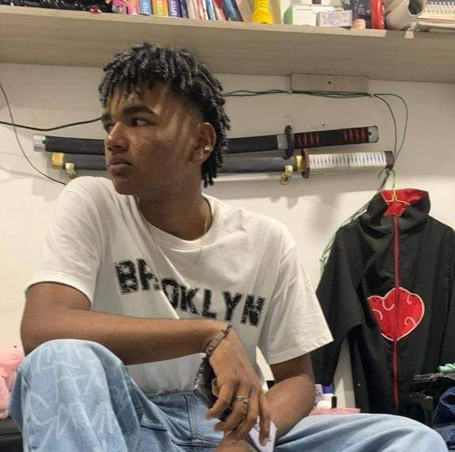

Soy estudiante de la facultad de Ingenierias y Arquitectura en la Universidad de pamplona, voy en tercer semestre de la carrera de ingenieria mecatronica, me gusta mucho la tecnologia en su parte fisica como su parte mas orientada al software.